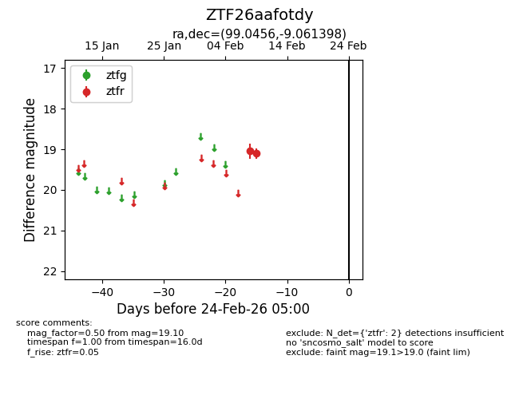
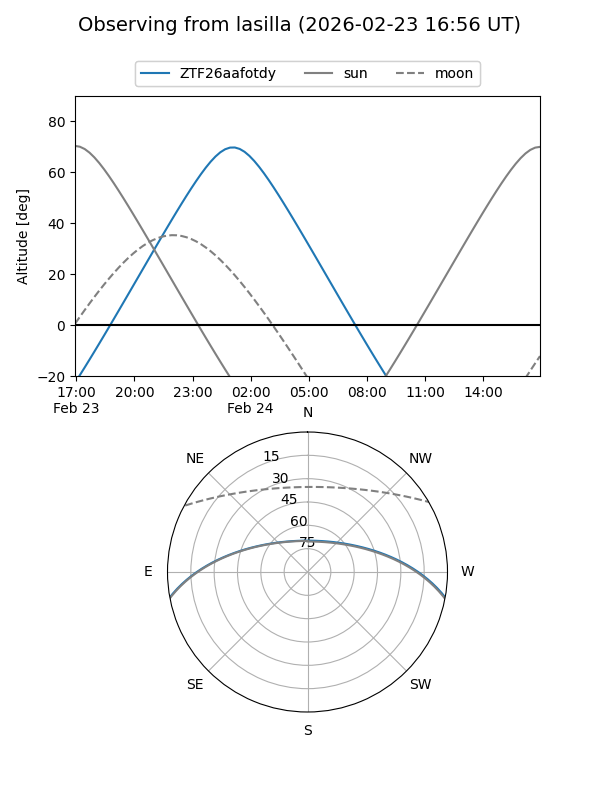
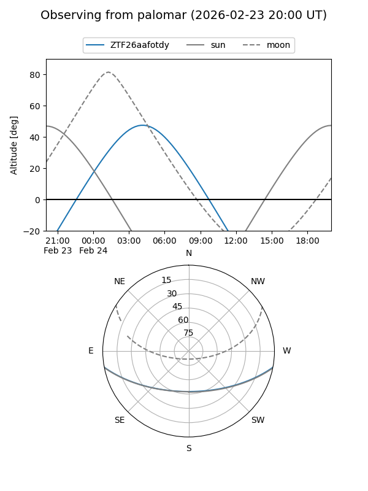

ZTF26aafotdy
Target ZTF26aafotdy at 2026-02-24 09:08
Aliases and brokers:
FINK: link
Lasair: link
ALeRCE: link
alt names
ZTF26aafotdy (ztf,fink_ztf)
Coordinates:
equatorial (ra, dec) = 99.0456,-9.06140
equatorial (HMS+DMS) = 06:36:10.95,-09:03:41.03
galactic (l, b) = (219.3143,-7.48538)
Flags:
Photometry:
last ztfr=19.10
2 ztfr detections
Lightcurve

Visibility


Additional plots